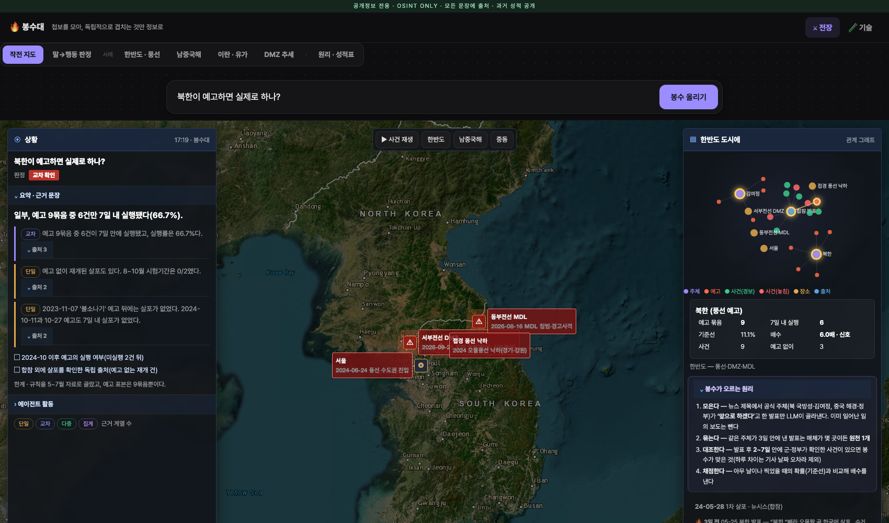

기사 수는 출처 수가 아니고, 경고 수는 신뢰도가 아니다분석관의 병목은 수집이 아니라 판단 — D4D T2 과제 01 배경
문장마다 출처 계열과 신뢰도 — 단일 · 교차 · 다중근거 없는 숫자·이름·다른 맥락 숫자는 검증자가 버리고, 버린 것도 보여준다 (심은 오류 2/2 탐지)

같은 엔진이 '누구의 말을 믿을지'를 숫자로 갈랐다남중국해는 규칙을 한반도에서 고정한 뒤 처음 적용한 시험 · 막대 = 95% 구간, 하한이 1배를 넘어야 신호
봉수대는 불을 올리고, 그 불이 맞았는지도 기록합니다공개정보 전용 → 동맹·민간과 공유 · 기존 자산: NAIS 해커톤의 '근거로만 답하는 에이전트' 원칙 · 오늘 만든 것: 수집기·분류기·원천 묶기·기준선 채점·검증자·작전 화면